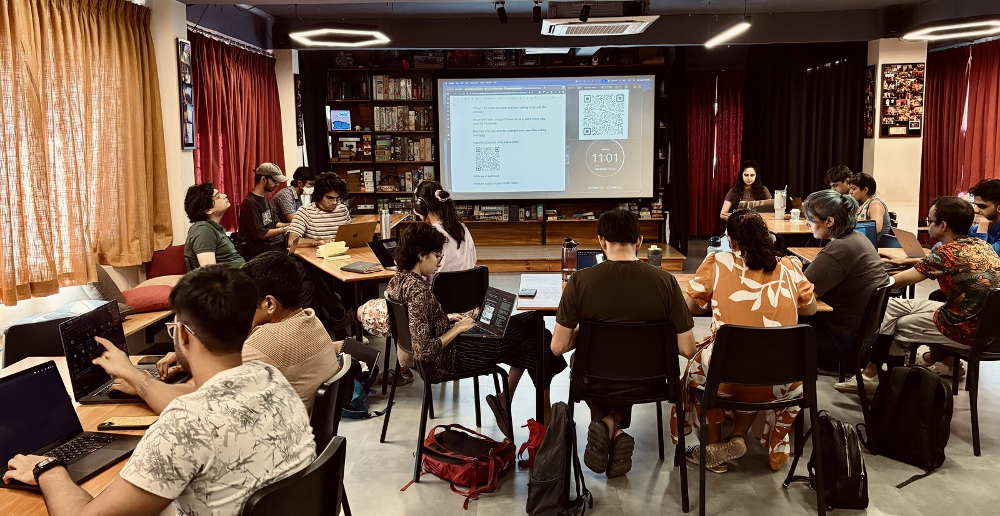
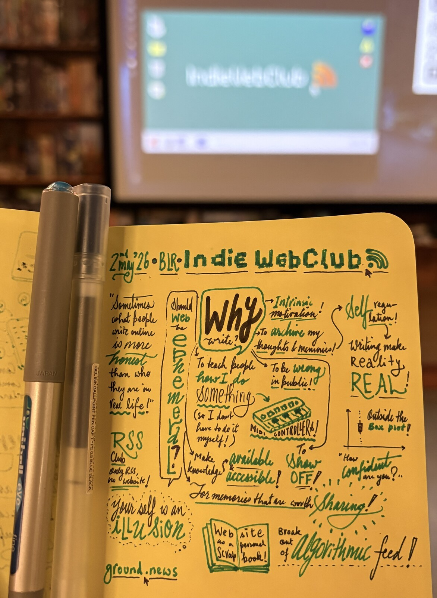

So much of my life has been spent finding spaces where I felt like I belonged (or could belong in). IndieWebClub has become one such space.
What is IndieWebClub, you ask?
IndieWebClub is part of a growing world-wide network of meetups for everyone who wants to take back their web experience from social media silos, and own their online identities & content, or just want support with blogging!
– from the website for IndieWebClub in Bangalore, India.

I came across IndieWebClub last year, and have sporadically attended a few sessions. It helped me write a blog post after 12 years (although I’m yet to write another one),
For me, IndieWebClub has been a reminder that there is still hope in the internet to break out of large tech monopolies who trade content for attention. I also absolutely love the folks that organize & attend these meetups — it reminds me of the cozy internet clubs from my school days!
I’ve seen many meetups & communities run organically, but one of the things that I’ve loved about IndieWebClub is its structure: it alternates between a writing-focused session with discussions on the idea of blogging, personal website, digital gardens, and a tech-focused session where people tinker with their websites and share why a particular platform IS THE ONE.
A consistent structure brings familiarity, and a clear agenda makes the discussions not spiral too much into tech jargons that can be intimadating for many.
Blogs? Personal websites? In the age of Social Media & AI?
The recent (writing) edition of IndieWebClub had a discussion on “Why do you write? (Or have a personal website?)” that sparked many interesting reflections.
Some of the reasons why people write were:
- I like to write (intrinsic motivation)
- I want to archive my thoughts & memories
- I want to be wrong in public
- I want to teach people how to do something (so I don’t have to do it myself)
- I want to make knowledge available & accessible
- I want to hold on to memories that are worth sharing
- I want to show off!

Thanks to IndieWebClub, I’ve found a nudge to revive my website and slowly update it.
Interested in knowing more?
You can find the next event announcement on District, read more about the recent posts on their website, and join their Whatsapp group (link on website) for more chatter!
PS: This was written for the IndieWebCarnival’s prompt for May: Write a Love Letter. So I had to write about IndieWebClub.